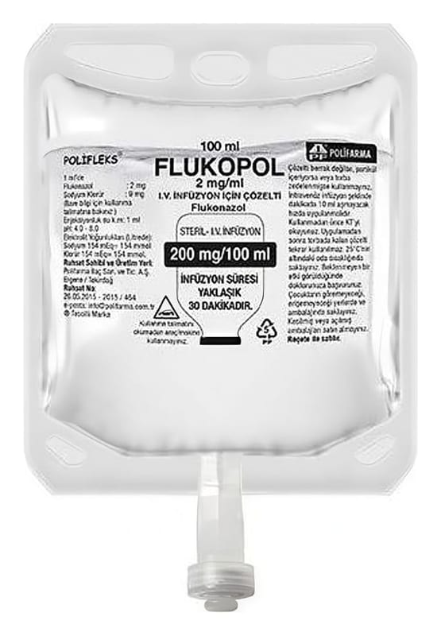

Flukopol 2 mg/ml IV İnfüzyon İçin Çözelti, 200 ml Setsiz

Ne için kullanılır
KT · Bölüm 1FLUKOPOL berrak, renksiz çözelti, damar içi kullanım standartlarına uyum göstermelidir. FLUKOPOL, antifungal adı verilen bir grup ilaçtan biridir. Etkin madde flukonazoldür. FLUKOPOL 2 mg/ml I.V. İnfüzyon İçin Çözelti; 50 mL, 100 mL ve 200 mL PP torbalarda satışa sunulmaktadır. Setli ve setsiz olmak üzere 2 formu bulunur. FLUKOPOL, mantarların neden olduğu enfeksiyonları tedavi etmek için kullanılır, ayrıca mantar enfeksiyonu kapmanızı önlemek için de kullanılabilir. Mantar enfeksiyonlarının en yaygın nedeni Candida adı verilen bir mayadır.
Yetişkinler Bu ilaç size doktorunuz tarafından aşağıdaki mantar enfeksiyon türlerini tedavi etmek için verilebilir: • Kriptokokal menenjit (beyin zarında bir mantar enfeksiyonu) • Koksidioidomikoz (vadi humması olarak bilinen, akciğerleriniz yoluyla vücudunuza giren mantarın neden olduğu bir hastalıktır) • Candida adı verilen bir mantar türünün neden olduğu ve kan dolaşımında, vücut organlarında (örn.kalp, akciğerler) veya idrar yolularında bulunan enfeksiyonlar • Mukozal pamukçuk (ağız , boğaz ve takma diş kaynaklı ağız yarasını etkileyen mantar enfeksiyonu)
Aşağıdakiler için de size FLUKOPOL verilebilir: • Kriptokokal menenjitin tekrarlanmasını önleme • Mukozal pamukçukların tekrarlanmasını önleme • Candida adlı mantarın sebep olduğu enfeksiyonlardan koruma (eğer bağışıklık sisteminiz zayıfsa ve düzgün çalışmıyorsa)
Çocuklar ve ergenler (0-17 yaş arası) Bu ilaç size doktorunuz tarafından aşağıdaki mantar enfeksiyon türlerini tedavi etmek için verilebilir: • Mukozal pamukçuk (ağız veya boğazda meydana gelen enfeksiyon) • Candida adı verilen bir mantar türünün neden olduğu ve kan dolaşımında, vücut organlarında (örn. kalp, akciğerler) veya idrar yollarında bulunan enfeksiyonlar • Kriptokokal menenjit (beyinde bir mantar enfeksiyonu)
Aşağıdakiler için de size FLUKOPOL verilebilir: • Candida adlı mantarın sebep olduğu enfeksiyonlardan koruma (eğer bağışıklık sisteminiz zayıfsa ve düzgün çalışmıyorsa) • Kriptokokal menenjitin tekrarlanmasını önleme